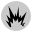

When you load a site in the current tab, you will be able to add it to your whitelist from here.
This site's cookies self-destruct
Temporarily suspend operation Resume operation Undelete cookies and suspend Undelete (more) cookies